Gong of Fortune
Two Gongs. Free Spins or Hold & Respin. Strike the one that fills first.
Concept
A 3×3, five-payline slot for 43-inch cabinets where the tension is carried by two persistent Gong collectors instead of a big grid. Red Gong Scatters feed the red Gong, and three of them trigger Free Spins with a Quick Hit multiplier built from collected Wilds. Green Gong Scatters feed the green Gong, and three of them trigger Hold & Respin, where coins merge into bigger coins. Each Gong stores its spin count across spins and resets to 5 when its feature triggers.
My role
Principal designer: feature ideation, the pitch deck and game flow, symbol and layout direction, the UI and UX flow, and a playable browser prototype of both Gong features.
Prototype screens
Captured from the playable prototype.
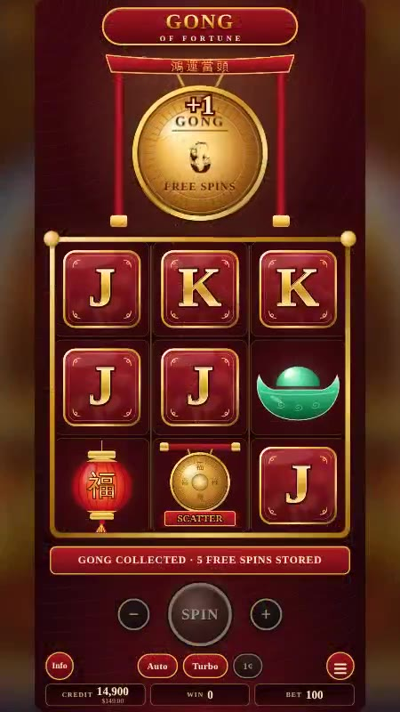
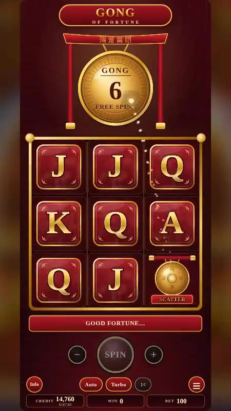
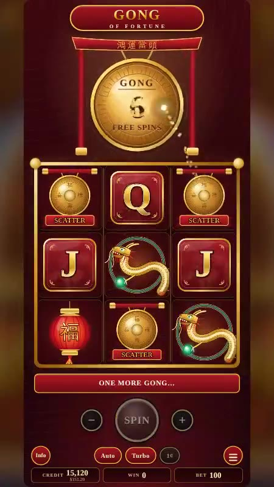
Putting the tension somewhere other than the grid
A 3×3 grid gives a player very few ways to win in a single spin. The design question was where the anticipation should live instead.
- 01
Move the tension into meters
DecisionPersistent Gong collectors build across spins, holding 5 to 19 spins, rather than relying on a big grid.
WhyOn a small grid the excitement per spin is limited, so I carried it across spins. The player is always partway through something.
Trade-offThe meters have to be impossible to miss on the cabinet layout, so they get prime screen space.
- 02
Two Gongs, two paths
DecisionA red Gong feeds Free Spins and a green Gong feeds Hold & Respin, each filled by its own colour of Scatter.
WhyOne scatter means one trigger. Two colours give the player two races to watch and a choice of which feeling they are chasing.
Trade-offMixed-colour scatters can feel like a near miss for neither. The demo never gives three of one colour outside the trigger spin.
- 03
Two features, two speeds
DecisionFree Spins builds a Quick Hit multiplier from Wilds. Hold & Respin merges coins when a row or column fills.
WhyFree Spins is the building beat and Hold & Respin is the tactile one. Both give the base game a long arc and a surprise.
- 04
Never let a trigger feel small
DecisionEvery feature pays at least 10× the bet.
WhyTriggering a feature is the moment a player has been waiting for. A weak trigger feels like a letdown, so the floor is set high.
Trade-offA higher floor reduces how much the rest of the paytable can give. I accepted that.
- 05
Make the feature reward itself
DecisionA Gong landing in a feature reveals 1, 2 or 3 extra spins, added at once. The total spin count sets the prize band for both features.
WhyExtra spins are the player's best news inside a feature, so they are always positive and always immediate. Tying the prize to the total makes the counter the thing to watch.
- 06
Script the rhythm of the base game
DecisionIn every 10 base spins: 6 non-winning, 3 symbol wins and 1 feature trigger, alternating the two features, with Gong Scatters on 6 of the 10.
WhyI designed the feel of ten spins as a unit. Scatters on most spins keep hope alive and make the trigger feel close, while the wins in between stop the base game feeling empty.
- 07
Treat sound as feedback
DecisionThe Gong collect and the feature triggers get the biggest audio, and each feature has its own musical mood.
WhyThey are the moments the whole design points at, so they get the loudest reward.
Design documentation
Pitch deck pages shown here. The playable build above is the proof of both features.
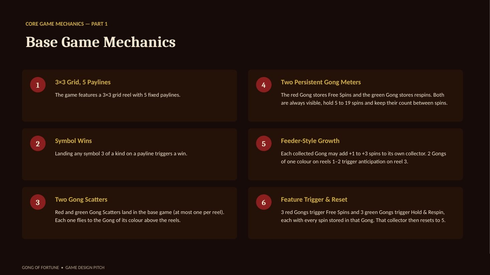
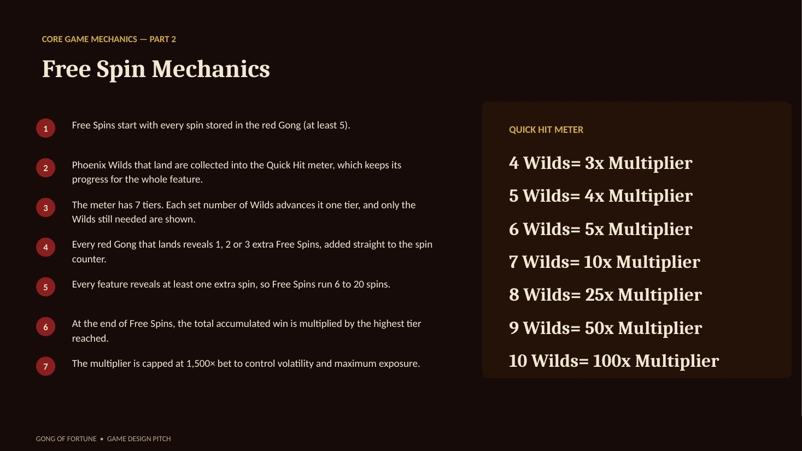
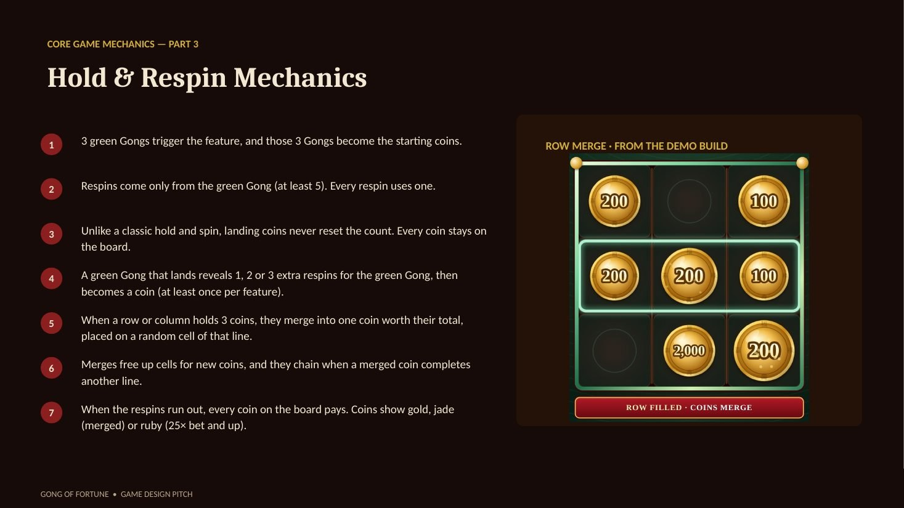
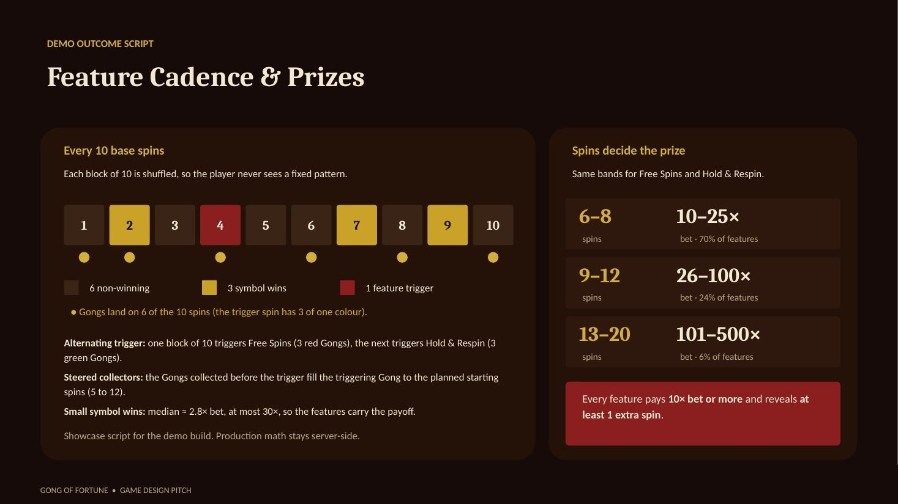
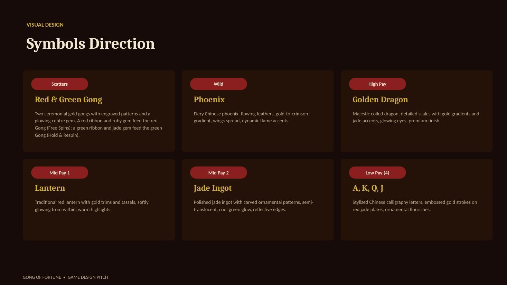
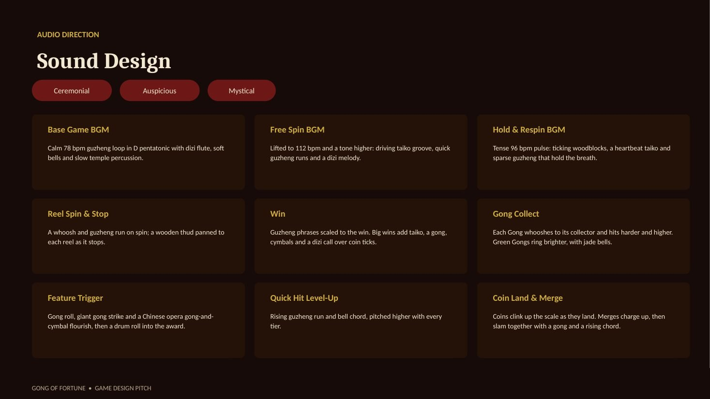
A small grid with two meters that remember
The tension lives in two Gong collectors above the reels, not in a big grid.
| Rule | How it works |
|---|---|
| 3×3 grid, 5 paylines | Three of a kind on a payline wins. |
| Two Gong Scatters | The red Gong Scatter feeds the red Gong (Free Spins). The green Gong Scatter feeds the green Gong (Hold & Respin). |
| Persistent collectors | Each Gong stores a spin count, always visible, holding 5 to 19 spins. |
| Feeder-style growth | Each Gong collected may add +1 to +3 spins to its own collector. Two Gongs of one colour on reels 1–2 build anticipation on reel 3. |
| Trigger and reset | 3 Gongs of one colour in a single spin start that feature using the stored total, then that Gong resets to 5. |
Wilds build a multiplier that pays at the end
During Free Spins, Wilds are collected into a Quick Hit meter. Progress persists for the whole feature, and the total win is multiplied by the highest tier reached. The multiplier is capped at 1,500× the bet to control volatility and maximum exposure.
| Wilds collected | Multiplier |
|---|---|
| 4 | 3× |
| 5 | 4× |
| 6 | 5× |
| 7 | 10× |
| 8 | 25× |
| 9 | 50× |
| 10 | 100× |
Coins that merge into bigger coins
| Part | How it works |
|---|---|
| Start | The 3 green Gongs become coins, and the spins stored in the green Gong are the respins. |
| Respins | Landing a coin does not reset the counter. Each respin uses one of the stored spins. |
| Merge | When a row or column holds 3 coins, they merge into one coin worth their sum, placed on a random cell of that line. Rows are checked top to bottom, then columns left to right, until no line is full. |
| End | When the spins run out, the feature pays the total of the coins on the board. |
Every Hold & Respin shows at least one merge.
The same promise for both features
A Gong landing inside a feature reveals 1, 2 or 3 extra spins, added at once, and every feature reveals at least one, so Free Spins run 6 to 20 spins. The total number of spins sets the prize band, and every feature pays at least 10× the bet.
| Total spins | Prize |
|---|---|
| 6–8 | 10–25× bet (70% of features) |
| 9–12 | 26–100× bet (24%) |
| 13–20 | 101–500× bet (6%) |
In the demo, every 10 base spins hold 6 non-winning spins, 3 symbol wins and 1 feature trigger, alternating between Free Spins and Hold & Respin. Gong Scatters land on 6 of the 10.
A Chinese ceremonial set
| Role | Symbol | Look |
|---|---|---|
| Scatter | Red and green Gongs | Large ceremonial gongs with a bronze-gold finish; the red one feeds Free Spins and the green one feeds Hold & Respin. |
| Wild | Phoenix | Fiery gold-to-crimson feathers, wings spread. |
| High pay | Golden Dragon | Coiled dragon with gold gradients and jade accents. |
| Mid pay | Lantern, Jade Ingot | Red lantern glowing from within; carved, semi-translucent jade. |
| Low pay | A, K, Q, J | Calligraphy letters embossed in gold on red jade plates. |
Each feature has its own sound
Each part of the game has its own music: a calm 78 bpm guzheng loop for the base game, a 112 bpm taiko-driven lift for Free Spins and a tense 96 bpm pulse of woodblocks and heartbeat taiko for Hold & Respin. Gong collects hit harder and higher with each spin, and green Gongs ring brighter with jade bells. A feature trigger gets a gong roll, a giant gong strike and an opera-gong flourish. Quick Hit tiers rise in pitch, and coin merges charge up before a gong slam.
Screens, flows and layout
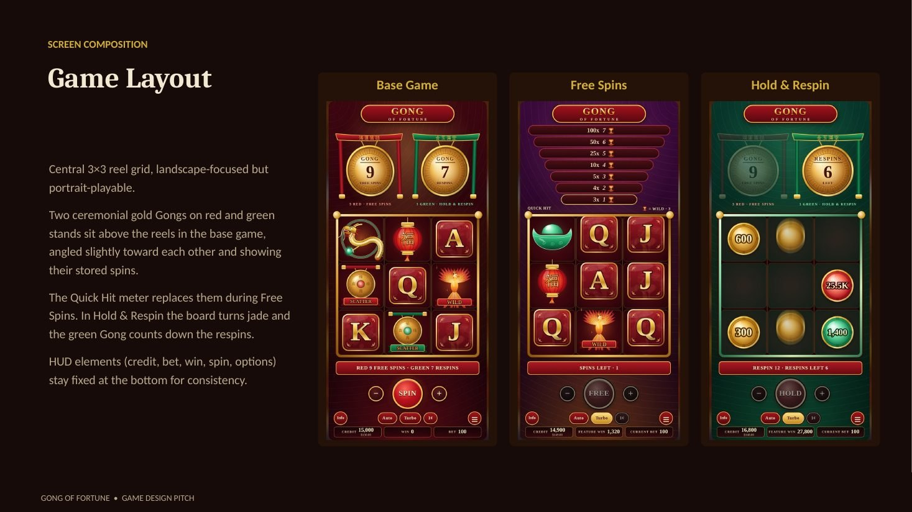
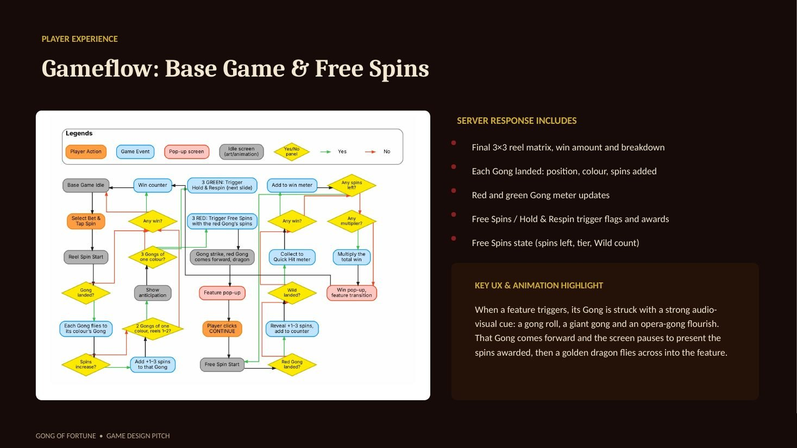
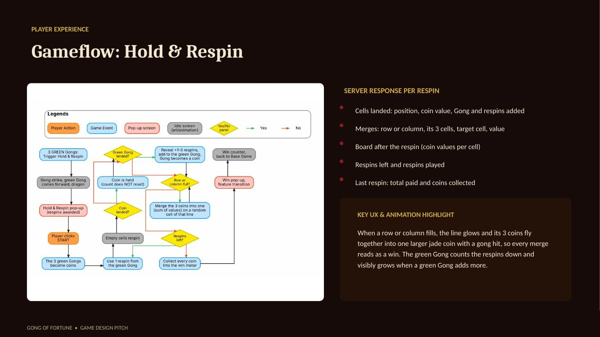
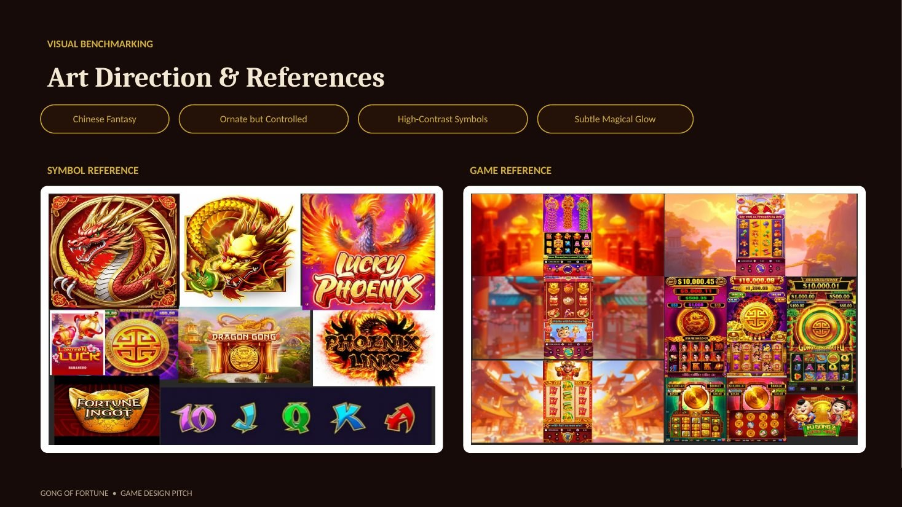